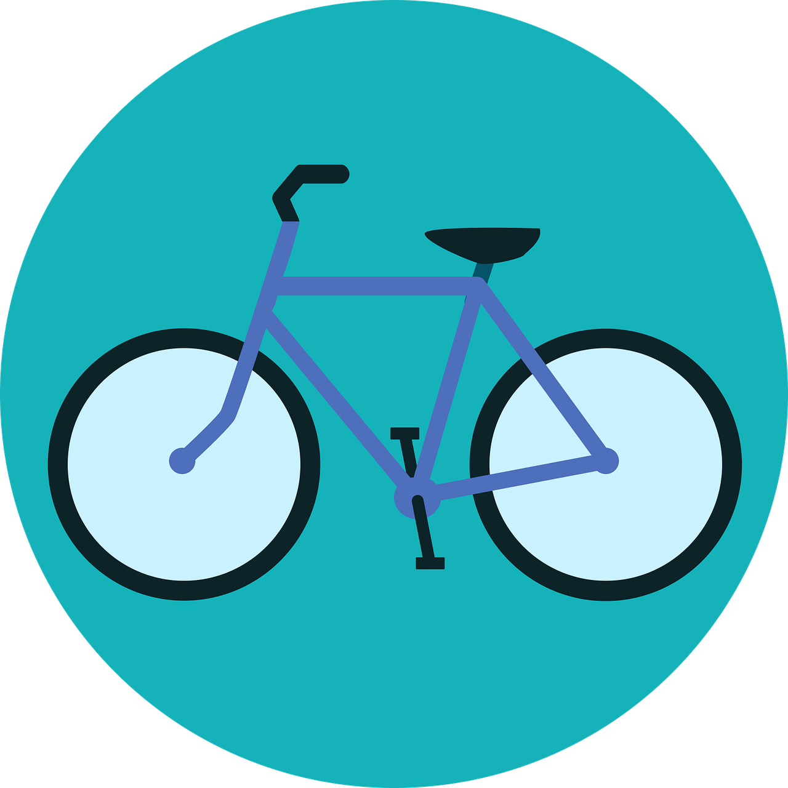
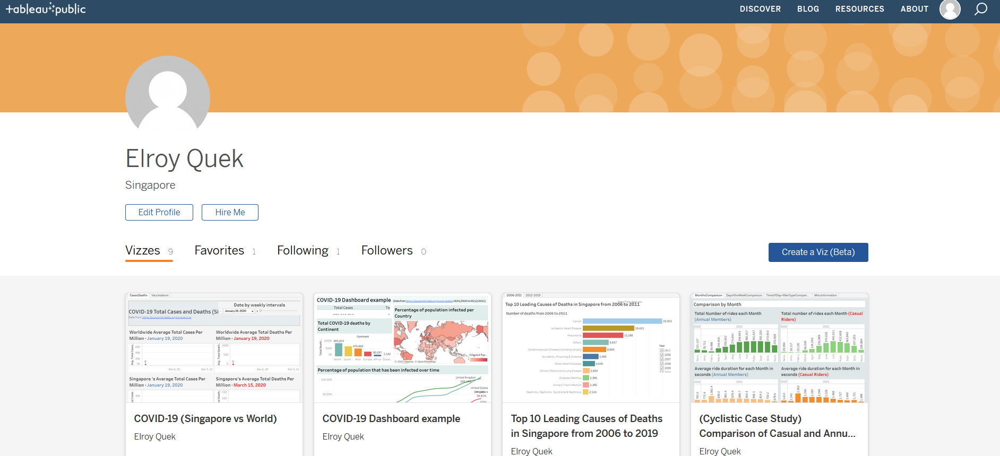

Google Data Analytics
Case Study 1

This is an optional capstone project for the Google Data Analytics Professional Certificate.
The case study involves assuming the role of a junior data analyst for a fictional bike sharing company Cyclistic,
and using historical bike trip data from Divvy(Bike sharing service in Chicago) to make data-driven recommendations on
how Cyclistic can incentivise their existing casual user customer base to switch to annual memberships.
SQL used in Microsoft SQL Server for data cleaning and transformation, followed by Tableau Public for data visualisation. Other steps of the analysis in a GitHub repository.
Google Data Analytics
Case Study 2
Case study 2 is about a junior data analyst working at Bellabeat, a high-tech manufacturer of health-focused products for women.
The objective is to find patterns or trends in smart device usage data, to make recommendations on marketing strategies for Bellabeat's smart device products.
R with the help of RStudio Desktop was used for each step of the data analysis process as it allows for easy sharing and reproducibilty of the analysis. Hosted on Kaggle as a Jupyter notebook.
 Dashboard showing COVID-19 trends in Singapore and the rest of the world.
Data from ourworldindata
Dashboard showing COVID-19 trends in Singapore and the rest of the world.
Data from ourworldindata
(scientific online publication with data on global issues). COVID-19 data visualised using Tableau Public.
Tableau Public Visualisations

Data visualisations using open-source data from various sources, e.g. data.gov
(Singapore's open data portal).
Wide range of topics and visualisation types.

Python projects using open-source data from sources such as Kaggle.
Use of popular libraries such as Numpy, Pandas, Seaborn for correlation analysis.